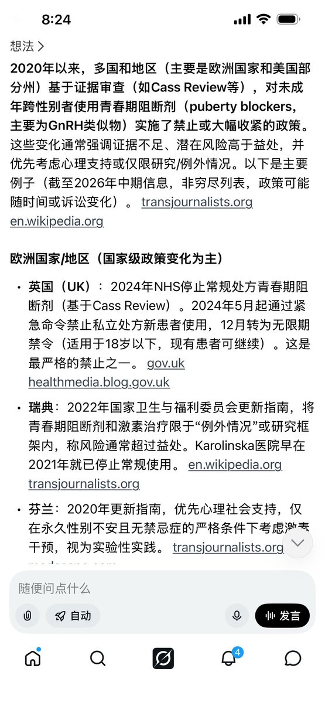
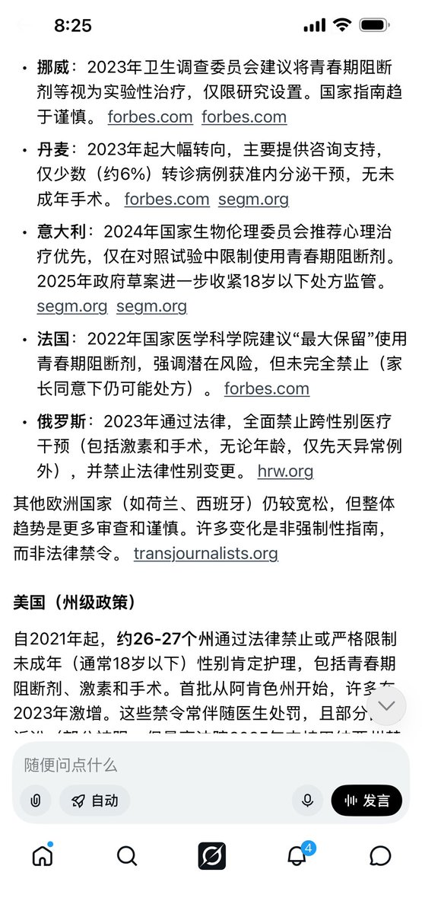

愿晚星照常升起🌈(keep4o)
@tadatsukiei
@SonogamiRinneTS 全球右转果然不是说说而已啊……头疼


是Rinne酱呀
@SonogamiRinneTS
原本以为这两年禁止未成年跨性别者使用青春期阻断剂和激素治疗的只有英美两国。直到昨天看到新西兰那个只承认生物学性别的修正案，觉得这可能没那么简单。今天好奇去搜了一下，只能说震惊到说不出话来，整个西方世界不是禁止或大幅度收紧，就是正在通往禁止的路上。这比我搜索之前预想的最坏的情况还要 https://t.co/NQpc4b2ARP